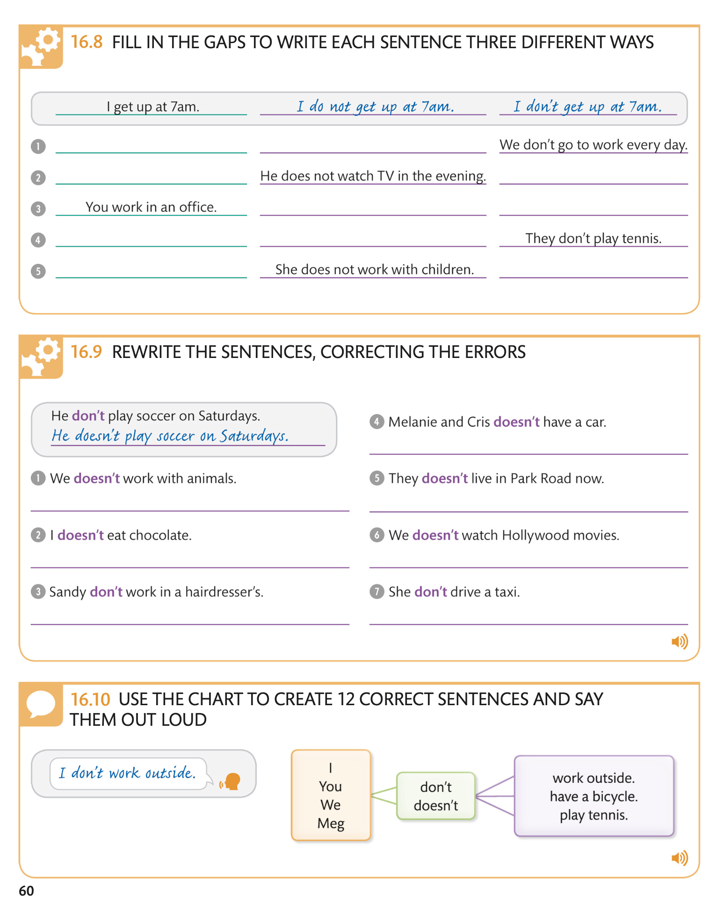

Simple questions / Простые вопросы
To form simple questions with the verb “to be,” you change the order of the subject and verb. The answer to a simple question usually starts with “yes” or “no.”
Чтобы сформировать простые вопросы с глаголом «быть», вы меняете порядок подлежащего и глагола. Ответ на простой вопрос обычно начинается со слов «yes» или «no».
17.1 KEY LANGUAGE QUESTIONS WITH “TO BE”
17.2 FURTHER EXAMPLES QUESTIONS WITH “TO BE”E

16.4 FILL IN THE GAPS USING “DO NOT” OR “DOES NOT”
ЗАПОЛНИТЕ ПРОБЕЛЫ, используя слова “DO NOT” или “DOES NOT”
16.5 LISTEN TO THE AUDIO AND ANSWER THE QUESTIONS
16.6 KEY LANGUAGE CONTRACTED NEGATIVES
16.7 FURTHER EXAMPLES PRESENT SIMPLE NEGATIVE: SHORT FORMS


16.11 READ THE ARTICLE AND ANSWER THE QUESTIONS
ПРОЧИТАЙТЕ СТАТЬЮ И ОТВЕТЬТЕ НА ВОПРОСЫ
Answers